경제·금융 기초와
네오뱅크 사용법
집값과 화폐가치에서 저축·신용·세금까지, 그리고 교실 화폐 네오뱅크
경제 기본 상식
집값, 희소성, 기회비용, 돈, 가격, 물가, 경제의 순환
2부금융 기초
소득과 지출, 예금·적금, 주식·채권·ETF, 금·은, 신용, 보험, 세금, IRP·ISA
3부네오뱅크 사용법
학급 준비부터 발행·지급·마켓·세금·뱃지까지
직접 해 보는 경제
인천·부천 집값은
왜 잘 오르지 않을까
같은 수도권이고 같은 돈이 풀렸는데, 서울 집값은 뛰고 서쪽은 조용합니다. 이 질문 하나에 경제의 기본이 거의 다 들어 있습니다.
2,200조 원 → 4,400조 원
19년 만에 가장 큰 폭
거의 오르지 않음
집은 재화이면서 자산입니다
🏡재화
쓰려고 사는 것입니다. 집은 들어가 사는 곳입니다. 값이 오르면 덜 삽니다.
💎자산
가치를 담아 두려고 갖는 것입니다. 집은 재산이기도 합니다. 값이 오를 것 같으면 오히려 더 사려 합니다.
라면값이 오르면 사람들은 라면을 덜 삽니다. 집값이 오르면 "더 오르기 전에 사야 한다"는 사람이 늘어납니다. 집값이 다른 물건값과 다르게 움직이는 이유입니다.
돈이 늘면 돈의 가치가 떨어집니다
- 화폐가치
- 돈 한 단위로 살 수 있는 양입니다. 돈이 많이 풀리면 같은 돈으로 살 수 있는 것이 줄어듭니다.
돈의 가치가 떨어질 것 같으면 사람들은 돈을 그냥 쥐고 있지 않고, 가치를 지켜 줄 자산으로 바꾸려 합니다. 이때 값이 크게 오르는 것은 마음대로 늘릴 수 없는 것입니다.
늘릴 수 있는가, 없는가
서울
빈 땅이 거의 없습니다. 헌 집을 헐어야 새집을 지을 수 있어 공급이 느립니다. 사려는 사람이 늘면 값이 먼저 오릅니다.
인천·부천
바다를 메운 송도와 청라, 영종과 검단, 계양과 부천 대장까지 새 아파트를 지을 땅이 계속 나옵니다. 사려는 사람이 늘면 집이 먼저 늘어납니다.
수요가 같이 늘어도 공급이 따라오는 곳은 가격이 덜 오릅니다. 희소한 것이 비싸집니다.
사려는 사람이 몰리는가
집의 수요는 일자리를 따라갑니다. 강남, 여의도, 광화문, 판교처럼 일자리가 많은 곳까지 걸리는 시간이 짧을수록 그 집을 원하는 사람이 많습니다. 통근 시간은 매일 치르는 기회비용입니다.
기대가 가격을 만듭니다
"여기는 오른다"는 믿음이 퍼지면 사려는 사람이 몰리고 실제로 오릅니다. "여기는 안 오른다"는 믿음도 같은 방식으로 굳어집니다. 자산의 가격에는 미래에 대한 기대가 들어 있습니다.
| 무엇이 다른가 | 서울 | 인천·부천 | 경제 개념 |
|---|---|---|---|
| 새집을 지을 땅 | 거의 없다 | 계속 나온다 | 희소성, 공급 |
| 일자리까지의 거리 | 가깝다 | 멀다 | 수요, 기회비용 |
| 오를 것이라는 믿음 | 강하다 | 약하다 | 자산, 기대 |
| 돈이 풀렸을 때 | 값이 오른다 | 집이 늘어난다 | 통화량, 화폐가치 |
덜 오르는 것은 나쁜 일일까
자산으로 보면 아쉬운 일입니다. 재화로 보면 살 집을 구하는 사람의 부담이 덜하다는 뜻입니다. 같은 집값도 어느 쪽에서 보느냐에 따라 평가가 달라집니다.
희소성과 선택
갖고 싶은 것은 많은데 쓸 수 있는 돈과 시간은 정해져 있습니다. 그래서 모든 경제 활동은 선택에서 시작합니다.
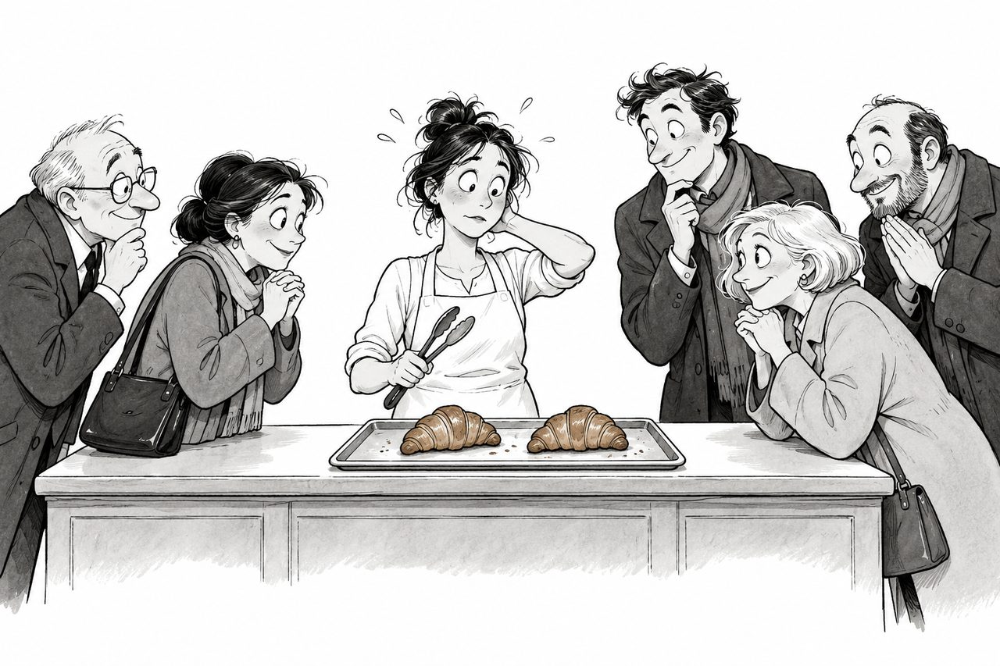
- 희소성
- 원하는 양에 비해 자원이 부족한 상태입니다. 돈뿐 아니라 시간, 자리, 재료도 모두 희소합니다.
나누는 규칙이 달라지면
🕐먼저 온 순서
일찍 와서 기다린 사람이 얻습니다. 기다린 시간이 값입니다.
🎲추첨
운이 좋은 사람이 얻습니다. 누구에게나 기회는 같습니다.
💰높은 값을 낸 순서
더 많이 내려는 사람이 얻습니다. 시장에서 가장 흔한 방식입니다.
어느 규칙을 쓰느냐에 따라 빵을 얻는 사람도, 치르는 대가도 달라집니다.
경제가 답해야 하는 세 가지
🧺무엇을
어떤 물건과 서비스를 얼마나 만들 것인가
🛠️어떻게
누가 어떤 방법으로 만들 것인가
🤝누구에게
만든 것을 누가 가져갈 것인가
기회비용
하나를 고르면 다른 하나는 포기해야 합니다. 포기한 것의 가치가 그 선택의 진짜 비용입니다.
- 기회비용
- 어떤 선택을 하면서 포기한 것 가운데 가장 가치가 큰 것입니다.
1만 원으로 빵과 음료를 산다면
빵은 2,000원, 음료는 1,000원입니다. 빵을 하나 더 사면 음료 두 잔을 살 수 없습니다.
돈을 쓰지 않아도 기회비용은 생깁니다. 토요일 두 시간을 게임에 쓰면 그 시간에 할 수 있었던 운동이나 독서를 포기한 것입니다.
이미 쓴 돈은 잊어야 합니다
- 매몰비용
- 이미 써 버려서 어떤 선택을 해도 돌려받을 수 없는 비용입니다. 입장료 3만 원은 더 먹든 그만 먹든 똑같이 나간 돈입니다.
합리적인 선택
지나간 비용이 아니라 지금부터 달라지는 것만 비교합니다.
돈의 역할
돈이 없던 시절에는 물건과 물건을 직접 바꿨습니다. 돈은 이 불편을 줄이려고 만든 약속입니다.
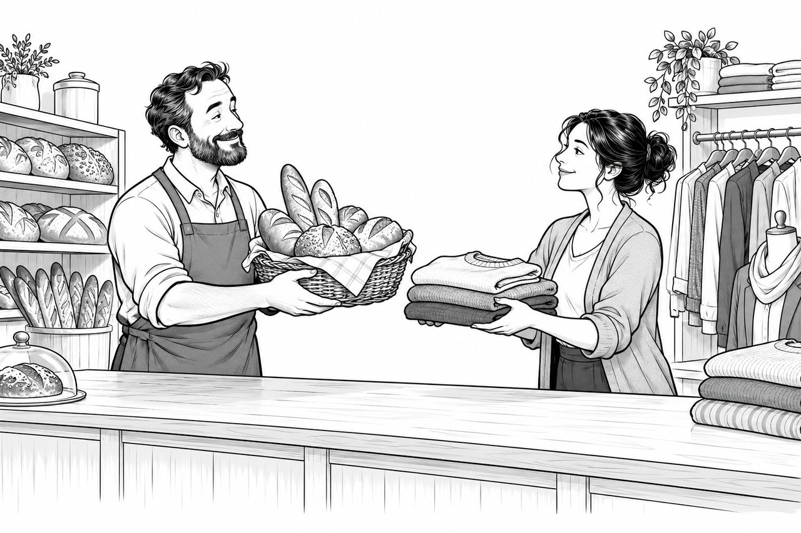
물물교환은 서로 원하는 것이 딱 맞는 상대를 찾아야 합니다. 돈이 있으면 빵을 팔아 돈을 받고, 그 돈으로 아무 가게에서나 옷을 살 수 있습니다.
화폐의 세 가지 기능
🔁교환의 매개
물건을 사고팔 때 중간에서 주고받는 수단입니다.
📏가치의 척도
빵 2,000원, 옷 30,000원처럼 값을 하나의 단위로 비교하게 해 줍니다.
🐷가치의 저장
오늘 번 돈을 모아 두었다가 나중에 쓸 수 있습니다.
돈의 모습은 계속 바뀌었습니다
모습은 달라도 바탕은 같습니다. 누구나 받아 줄 것이라는 믿음이 있어야 돈으로 쓰입니다.
가격이 정해지는 원리
가격은 사려는 사람과 팔려는 사람이 만나는 곳에서 정해집니다.
- 수요
- 가격이 오르면 사려는 양이 줄어듭니다.
- 공급
- 가격이 오르면 팔려는 양이 늘어납니다.
- 균형가격
- 사려는 양과 팔려는 양이 같아지는 가격입니다.
가격이 움직이는 네 가지 경우
| 변화 | 예 | 가격 | 거래량 |
|---|---|---|---|
| 수요 증가 | 빵집이 방송에 나와 손님이 몰린다 | 오른다 | 늘어난다 |
| 수요 감소 | 유행이 지나 찾는 사람이 준다 | 내린다 | 줄어든다 |
| 공급 증가 | 같은 빵을 파는 가게가 늘어난다 | 내린다 | 늘어난다 |
| 공급 감소 | 밀가루값이 올라 적게 만든다 | 오른다 | 줄어든다 |
경쟁
같은 물건을 파는 사람이 많으면 혼자 값을 올리기 어렵습니다. 손님이 옆 가게로 가기 때문입니다. 파는 사람이 하나뿐이면 값을 정하는 힘이 커집니다.
직접 값을 정해 봅니다
물가와 통화량
지갑 속 만 원은 그대로인데 살 수 있는 것은 달라집니다.
- 물가
- 여러 물건과 서비스의 가격을 종합한 평균 수준입니다.
- 인플레이션
- 물가가 계속 오르는 현상입니다. 같은 돈으로 살 수 있는 양, 곧 구매력이 줄어듭니다.
같은 만 원, 줄어드는 빵
만 원은 그대로인데 살 수 있는 빵이 5개, 4개, 3개로 줄어듭니다.
돈의 양이 늘면
- 통화량
- 경제 안에 풀려 있는 돈의 양입니다.
빵 하나에 돌아가는 돈이 세 배가 됩니다. 빵값이 세 배가 됩니다.
만들어 내는 물건은 그대로인데 돈만 늘어나면, 더 많은 돈이 같은 물건을 쫓게 되어 가격이 오르기 쉽습니다. 그래서 중앙은행은 돈의 양과 금리를 조절해 물가를 안정시키려 합니다. 우리나라의 중앙은행은 한국은행입니다.
직접 돈을 찍어 봅니다
명목과 실질
용돈이 5% 올랐는데 물가도 3% 올랐다면, 실제로 더 살 수 있게 된 것은 약 2%입니다.
경제의 순환
누군가 쓴 돈은 다른 누군가의 소득이 됩니다. 돈은 가계, 기업, 정부, 은행 사이를 계속 돕니다.
🏠가계
일을 해서 소득을 얻고, 그 돈으로 소비하고 저축합니다.
🏭기업
물건과 서비스를 만들어 팔고, 일한 사람에게 임금을 줍니다.
🏛️정부
세금을 걷어 도로, 학교, 소방처럼 함께 쓰는 것을 마련합니다.
🏦은행
저축을 모아 돈이 필요한 가계와 기업에 빌려줍니다.
만들면 가치가 더해집니다
기업은 재료를 사서 더 값진 것으로 바꾸어 팝니다. 밀이 반죽이 되고 빵이 될 때마다 값이 붙습니다.
소득과 지출
돈 관리의 출발점은 얼마가 들어오고 얼마가 나가는지 아는 것입니다.
소득의 네 가지
💼근로소득
일한 대가로 받는 월급, 시급
🏪사업소득
가게나 사업을 해서 번 돈
📈재산소득
이자, 배당, 임대료
🎁이전소득
용돈, 연금, 지원금
지출과 저축
월급 250만 원이 나뉘는 모습
- 소비지출은 먹고, 입고, 배우고, 즐기는 데 쓰는 돈입니다.
- 비소비지출은 세금, 건강보험료, 이자처럼 반드시 내야 하는 돈입니다.
예산
- 들어올 돈을 먼저 확인합니다.
- 꼭 필요한 것과 갖고 싶은 것을 나눕니다.
- 저축할 돈을 먼저 떼어 놓고 나머지로 씁니다.
- 쓴 돈을 기록하고 계획과 비교합니다.
한 달을 직접 살아 봅니다
할인이 크면 싼 것일까
비교할 것은 정가가 아니라 다른 가게의 가격과, 그 물건이 정말 필요한지입니다.
저축과 투자
쓰지 않고 남긴 돈을 어디에 두느냐에 따라 미래의 크기가 달라집니다.
🐷저축
은행에 맡기고 정해진 이자를 받습니다. 원금을 지키는 대신 수익은 낮습니다.
📊투자
주식, 채권, 펀드를 삽니다. 더 큰 수익을 기대할 수 있지만 원금을 잃을 수도 있습니다.
수익과 위험은 함께 움직입니다. 높은 수익을 기대할수록 손실 가능성도 커집니다.
단리와 복리
- 단리
- 원금에만 이자가 붙습니다.
- 복리
- 이자에도 다시 이자가 붙습니다. 시간이 길수록 차이가 커집니다.
100만 원을 연 5%로 맡기면
72의 법칙
복리로 돈이 두 배가 되는 데 걸리는 햇수를 어림합니다.
나누어 담기
한 곳에 모두 넣으면 그곳이 흔들릴 때 전부 잃습니다. 여러 곳에 나누면 한 곳의 손실이 전체에 미치는 영향이 줄어듭니다. 이를 분산투자라고 합니다.
예금과 적금
원금을 지키면서 이자를 받는, 가장 기본이 되는 금융상품입니다.
👛입출금통장
언제든 넣고 뺍니다. 이자는 거의 없습니다. 생활비를 두는 곳입니다.
🔒정기예금
목돈을 한 번에 맡기고 만기까지 둡니다. 이미 모은 돈을 굴릴 때 씁니다.
🪜정기적금
매달 정한 금액을 넣습니다. 목돈을 만들어 갈 때 씁니다.
같은 5%인데 이자가 다릅니다
예금은 맡긴 돈 전체가 처음부터 끝까지 이자를 받습니다. 적금은 첫 달에 넣은 돈만 열두 달 치 이자를 받고, 마지막 달에 넣은 돈은 한 달 치만 받습니다.
연 5% 적금에 매달 10만 원씩 1년
이자에도 세금이 붙습니다
이자를 받을 때 이자소득세 15.4%를 먼저 떼고 줍니다.
고를 때 볼 것
| 항목 | 확인할 내용 |
|---|---|
| 금리 | 기본 금리와 조건이 붙은 우대 금리를 나누어 봅니다. 세금을 뺀 뒤의 이자로 비교합니다. |
| 기간 | 만기 전에 깨면 약속한 이자를 거의 받지 못합니다. 쓸 일이 없는 기간만큼만 묶습니다. |
| 예금자보호 | 금융회사 한 곳당 1인 1억 원까지 원금과 이자를 돌려받습니다. |
채권·펀드·ETF
예금보다 더 벌고 싶지만 한 회사에 몰아넣기는 불안할 때 쓰는 상품들입니다.
- 채권
- 정부나 회사가 돈을 빌리면서 써 주는 차용증입니다. 정해진 이자를 주고 만기에 원금을 돌려줍니다. 빌린 곳이 망하면 돌려받지 못할 수 있습니다.
🏛️국채
나라가 발행합니다. 떼일 위험이 가장 낮고 이자도 낮습니다.
🏢회사채
회사가 발행합니다. 회사의 신용이 낮을수록 이자를 더 줍니다.
금리가 오르면 채권값은 내립니다
연 3% 이자를 주는 채권을 갖고 있는데 새 채권이 5%를 주기 시작하면, 3%짜리는 값을 깎아야 팔립니다.
- 펀드
- 여러 사람의 돈을 모아 운용 회사가 주식과 채권에 나누어 투자합니다. 맡기는 대가로 해마다 보수를 냅니다.
- 지수
- 여러 주식의 가격을 묶어 하나의 숫자로 나타낸 것입니다. 코스피, 코스닥, 미국의 S&P 500이 지수입니다.
- ETF
- 지수를 그대로 따라가도록 만든 펀드를 주식처럼 사고파는 상품입니다. 한 주만 사도 수백 개 회사에 나누어 투자한 것과 같습니다.
주식
주식을 산다는 것은 그 회사의 주인 가운데 한 사람이 된다는 뜻입니다.
돈을 버는 두 가지 길
📈시세차익
산 값보다 비싸게 팔아서 얻는 이익입니다. 값이 내리면 손실입니다.
🎁배당
회사가 번 돈의 일부를 주주에게 나누어 주는 것입니다. 주지 않는 회사도 많습니다.
회사의 크기는 주가가 아니라 시가총액입니다
- 시가총액
- 주가에 주식 수를 곱한 값입니다. 회사 전체를 사는 데 드는 돈입니다.
주가는 가 회사가 열 배 비싸지만 회사의 크기는 나 회사가 다섯 배입니다.
- PER
- 주가를 한 주가 벌어들이는 이익으로 나눈 값입니다. 10이면 지금 이익으로 10년을 벌어야 주가만큼 된다는 뜻입니다. 높을수록 미래에 대한 기대가 크게 들어가 있습니다.
주가를 움직이는 것
| 요인 | 주가가 오르기 쉬울 때 | 내리기 쉬울 때 |
|---|---|---|
| 실적 | 이익이 예상보다 많다 | 이익이 예상보다 적다 |
| 금리 | 금리가 내린다 | 금리가 오른다 |
| 기대 | 앞으로 더 벌 것이라고 본다 | 기대가 꺾인다 |
| 사려는 돈 | 사려는 사람이 많다 | 팔려는 사람이 많다 |
실적이 좋아도 주가가 내릴 때가 있습니다. 좋은 실적이 이미 주가에 들어가 있었기 때문입니다.
우리나라 주식시장
🏙️코스피
규모가 큰 회사가 중심인 시장
🚀코스닥
기술 기업과 성장 기업이 중심인 시장
⏰거래
정규 시간 9시부터 15시 30분. 하루에 30%까지만 오르내립니다.
사고팔 때 증권사 수수료를 내고, 팔 때는 증권거래세를 냅니다. 배당에는 15.4%의 세금이 붙습니다.
우량주와 테마주
같은 주식이라도 무엇을 보고 사느냐에 따라 전혀 다른 물건이 됩니다.
| 부르는 이름 | 어떤 주식인가 | 살필 점 |
|---|---|---|
| 우량주 | 오래 돈을 벌어 왔고 빚이 적으며 규모가 큰 회사 | 크게 오르기 어렵습니다. 그래도 내릴 때는 내립니다. |
| 배당주 | 번 돈을 꾸준히 주주에게 나누어 주는 회사 | 이익이 줄면 배당도 줄어듭니다. |
| 성장주 | 지금 이익은 적어도 빠르게 커지는 회사 | 기대가 꺾이면 크게 내립니다. |
| 가치주 | 버는 돈과 가진 재산에 비해 주가가 낮은 회사 | 낮은 데는 이유가 있을 수 있습니다. |
| 테마주 | 정치, 신기술, 유행 같은 이야깃거리로 묶여 함께 오르내리는 주식 | 회사의 이익과 상관없이 움직입니다. |
테마주가 지나가는 길
오를 때 뒤따라 산 사람의 돈이 먼저 산 사람에게 넘어갑니다.
사기 전에 확인할 것
- 회사가 실제로 그 사업을 하고 있는지 공시에서 확인합니다.
- 이익이 나는 회사인지 봅니다.
- 그 정보를 말한 사람이 누구이고 무엇을 얻는지 생각합니다.
- "꼭 오른다"며 종목을 찍어 주는 단체방은 피합니다.
| 거래소의 경보 | 뜻 |
|---|---|
| 투자주의 | 이상하게 오르거나 거래가 몰린 종목 |
| 투자경고 | 짧은 기간에 지나치게 오른 종목 |
| 투자위험 | 경고 뒤에도 계속 오른 종목. 거래가 멈출 수 있습니다. |
금과 은
금은 이자도 배당도 주지 않습니다. 그런데도 사람들이 찾는 까닭은 마음대로 늘릴 수 없기 때문입니다.
🥇금
돈의 가치가 떨어지거나 경제가 불안할 때 찾는 사람이 늘어납니다. 그래서 안전자산이라고 부릅니다.
🥈은
금보다 훨씬 싸고, 전자제품과 태양광 같은 산업에 많이 쓰입니다. 경기에 따라 값이 금보다 크게 흔들립니다.
우리나라 금값이 정해지는 식
국제 금값이 그대로여도 환율이 오르면 우리나라 금값은 오릅니다.
금을 사는 방법
| 방법 | 특징 |
|---|---|
| 골드바·은괴 같은 실물 | 살 때 부가가치세 10%와 수수료가 붙고 보관할 곳이 필요합니다. |
| 은행 금 통장 | 돈을 넣으면 그만큼의 금 무게로 적립됩니다. |
| 거래소 금시장 | 증권사 계좌로 금을 1g 단위로 사고팝니다. |
| 금 ETF·펀드 | 금값을 따라가는 상품을 주식처럼 사고팝니다. |
방법마다 세금과 수수료가 다릅니다.
알고 사야 할 것
- 값이 올라야만 이익이 납니다. 들고 있는 동안 나오는 돈은 없습니다.
- 몇 해씩 값이 제자리이거나 내릴 수 있습니다.
- 안전자산이라는 말은 값이 안 떨어진다는 뜻이 아닙니다.
투자 상품 한눈에
더 벌 수 있는 곳은 더 잃을 수도 있는 곳입니다. 상품마다 자리가 다릅니다.
오른쪽으로 갈수록 값이 크게 흔들립니다. 금, 은, 테마주처럼 선 아래에 있는 것은 흔들림에 비해 기대할 수 있는 수익이 뚜렷하지 않은 자리입니다.
| 상품 | 무엇으로 버는가 | 원금을 잃을 수 있는가 | 예금자보호 |
|---|---|---|---|
| 예금·적금 | 이자 | 아니오 | 1억 원까지 |
| 채권 | 이자, 가격 차이 | 예 | 없음 |
| 펀드·ETF | 담긴 자산의 값 상승, 분배금 | 예 | 없음 |
| 주식 | 시세차익, 배당 | 예 | 없음 |
| 금·은 | 가격 차이 | 예 | 없음 |
| 가상자산 | 가격 차이 | 예. 전부 잃을 수 있습니다. | 없음 |
투자의 네 가지 원칙
🧘여윳돈으로
당장 쓸 돈과 빌린 돈으로는 하지 않습니다.
🧺나누어서
한 종목, 한 상품에 몰지 않습니다.
⏳오래
짧게 볼수록 운에 좌우됩니다.
🔍아는 것만
무엇으로 돈을 버는지 설명하지 못하면 사지 않습니다.
신용과 대출
빌린 돈은 미래의 내가 벌 돈을 미리 당겨 쓰는 것입니다. 그 값이 이자입니다.
- 신용
- 약속한 대로 갚을 것이라는 믿음입니다.
- 이자
- 돈을 빌려 쓴 대가입니다. 빌린 사람에게는 비용, 맡긴 사람에게는 수입입니다.
100만 원을 빌리면 부자가 될까
통장의 돈이 100만 원 늘었지만 갚아야 할 돈도 100만 원 생겼습니다. 가진 것에서 갚을 것을 뺀 순자산은 그대로입니다.
신용점수
빌린 돈과 카드값을 제때 갚은 기록이 쌓여 신용점수가 됩니다. 점수가 높으면 낮은 이자로 빌릴 수 있고, 연체가 쌓이면 이자가 높아지거나 빌리기 어려워집니다.
체크카드와 신용카드
💳체크카드
결제하는 순간 통장 잔액에서 빠져나갑니다. 잔액만큼만 쓸 수 있습니다.
🧾신용카드
카드사가 먼저 내 주고 나중에 갚습니다. 외상이며 곧 빚입니다.
위험과 보험
사고는 언제 누구에게 일어날지 모릅니다. 보험은 큰 손실을 여럿이 나누어 감당하는 방법입니다.
100명이 1만 원씩 모으면
한 해에 100명 중 1명이 100만 원의 손해를 본다면, 한 사람이 감당해야 할 평균 손실은 1만 원입니다.
백 명 가운데 누가 빨간 점이 될지는 아무도 모릅니다. 그래서 모두가 조금씩 냅니다.
- 보험료
- 가입자가 정기적으로 내는 돈입니다.
- 보험금
- 약속한 사고가 났을 때 받는 돈입니다.
- 자기부담금
- 손해 가운데 가입자가 직접 내는 몫입니다.
보험의 종류
🛟보장성 보험
사고와 질병에 대비합니다. 일이 없으면 돌려받는 돈이 적거나 없습니다. 보험의 본래 쓰임입니다.
🏺저축성 보험
목돈이나 노후 자금을 만듭니다. 일찍 해지하면 낸 돈보다 적게 돌려받습니다.
| 보험 | 무엇에 대비하는가 |
|---|---|
| 실손의료보험 | 병원과 약국에 실제로 낸 돈의 일부를 돌려받습니다. |
| 자동차보험 | 사고로 남에게 입힌 피해를 물어 줍니다. 차가 있으면 반드시 들어야 합니다. |
| 화재보험 | 불이 나서 생긴 집과 가게의 손해 |
| 정기보험·종신보험 | 가장이 세상을 떠났을 때 남은 가족의 생활 |
| 연금보험 | 일을 그만둔 뒤의 생활비 |
나라가 운영하는 네 가지 보험
월급에서 미리 빠져나가는 보험료가 이것입니다. 원해서 드는 것이 아니라 모두가 들어야 합니다.
보험이 있는 마을과 없는 마을
금융사기를 피하는 습관
- 모르는 번호로 온 문자의 링크는 누르지 않습니다.
- 비밀번호와 인증번호는 누구에게도 알려 주지 않습니다.
- "원금 보장, 높은 수익"을 함께 약속하는 곳은 의심합니다.
- 급하게 돈을 보내라는 연락은 끊고 직접 확인합니다.
세금
도로, 학교, 소방서는 누가 값을 치를까요. 함께 쓰는 것은 함께 냅니다.
- 공공재
- 가로등이나 소방처럼 여럿이 함께 쓰고, 돈을 안 낸 사람만 못 쓰게 막기 어려운 것입니다.
- 무임승차
- 값을 치르지 않고 혜택만 누리는 것입니다. 모두가 그렇게 하면 아무도 만들지 않게 됩니다.
- 세금
- 나라와 지방자치단체가 공동으로 필요한 일에 쓰려고 걷는 돈입니다.
세금의 종류
| 세금 | 언제 내는가 |
|---|---|
| 소득세 | 월급이나 사업으로 돈을 벌었을 때 |
| 부가가치세 | 물건을 살 때. 가격에 10%가 포함되어 있습니다. |
| 재산세 | 집이나 땅을 가지고 있을 때 |
- 원천징수
- 월급을 줄 때 세금을 미리 떼고 나머지를 주는 방식입니다. 통장에 들어온 월급이 계약한 금액보다 적은 이유입니다.
월급이 통장에 오기까지
걷은 세금은
정부가 예산을 세워 교육, 복지, 국방, 안전에 씁니다. 세금을 많이 걷으면 함께 쓰는 것이 늘지만 각자 쓸 수 있는 돈은 줄어듭니다.
세금을 줄이는 제도
나라는 노후 준비, 저축, 기부, 지역 소비처럼 권하고 싶은 일에 세금을 깎아 줍니다. 알면 돌려받고 모르면 그냥 냅니다.
연말정산
월급에서는 세금을 어림해서 미리 뗍니다. 한 해가 끝나면 실제로 내야 할 세금을 다시 계산해, 더 냈으면 돌려받고 덜 냈으면 더 냅니다.
✂️소득공제 100만 원
세금을 매기는 소득이 100만 원 줄어듭니다. 세율 15% 구간이면 세금은 15만 원 줄어듭니다.
🎟️세액공제 100만 원
낼 세금에서 100만 원을 그대로 뺍니다.
카드와 현금영수증
| 쓴 방법 | 소득공제율 |
|---|---|
| 신용카드 | 15% |
| 체크카드·현금영수증 | 30% |
| 전통시장·대중교통 | 40% |
한 해 동안 쓴 돈이 총급여의 25%를 넘어야 하고, 넘은 금액에만 적용됩니다.
연금저축과 IRP
🌱연금저축
누구나 만들 수 있는 노후 준비 계좌입니다. 한 해 600만 원까지 세액공제를 받습니다.
🏦IRP
개인형 퇴직연금입니다. 퇴직금을 받는 계좌이기도 합니다. 연금저축과 합쳐 한 해 900만 원까지 세액공제를 받습니다.
| 총급여 | 공제율 | 900만 원을 넣으면 |
|---|---|---|
| 5,500만 원 이하 | 16.5% | 148만 5천 원 |
| 5,500만 원 초과 | 13.2% | 118만 8천 원 |
ISA
예금, 펀드, ETF, 주식을 한 계좌에 담는 개인종합자산관리계좌입니다. 계좌 안에서 번 것과 잃은 것을 합쳐 남은 이익에만 세금을 매깁니다.
| 항목 | 내용 |
|---|---|
| 넣을 수 있는 돈 | 한 해 2,000만 원, 모두 합쳐 1억 원 |
| 세금을 안 내는 이익 | 200만 원까지. 소득이 낮은 서민형은 400만 원까지 |
| 넘는 이익 | 9.9%만 따로 냅니다. 일반 계좌는 15.4%입니다. |
| 유지 기간 | 3년 이상 |
3년 동안 이익이 500만 원 났다면
고향사랑기부제
내가 사는 곳이 아닌 지방자치단체에 기부하면 세금을 깎아 주고 그 지역의 특산품을 답례로 줍니다. 한 해 2,000만 원까지 기부할 수 있습니다.
| 기부한 돈 | 세액공제 |
|---|---|
| 10만 원까지 | 전액 |
| 10만 원 초과 20만 원까지 | 44% |
| 20만 원 초과 | 16.5% |
10만 원을 기부하면
지역사랑상품권
지방자치단체가 발행하는 돈입니다. 그 지역의 가맹점에서만 쓸 수 있고, 살 때 할인을 받거나 쓴 뒤 일부를 돌려받습니다. 할인율은 지역과 시기에 따라 다릅니다. 쓴 금액은 연말정산에서 소득공제를 받습니다.
🏘️왜 만드는가
쓸 수 있는 곳을 그 지역으로 묶어 돈이 동네 가게 안에서 돌게 합니다.
🏫교실로 옮기면
우리 반 안에서만 쓰는 학급 화폐가 같은 원리입니다. 네오뱅크의 코인이 그것입니다.
네오뱅크 한눈에
교실에서 쓰는 화폐를 발행하고, 지급하고, 사고팔고, 세금을 걷는 웹 서비스입니다.
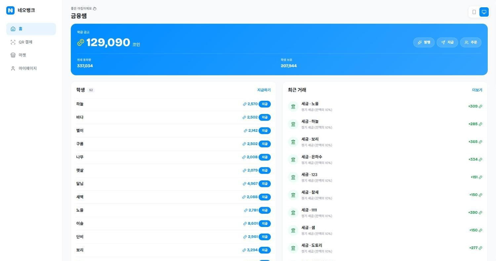
메뉴
🏠홈
학급 금고, 학생 목록과 잔액, 최근 거래
🔳QR 결제
입장용 QR 보여 주기, QR 스캔
🛍️마켓
상품 등록과 판매
👤마이페이지
뱃지 현황, 학급 정보, 주문 관리, 고급 기능, 설정
코인이 도는 길
금고에서 나간 코인은 학생 사이를 돌다가 세금으로 다시 금고에 모입니다. 코인의 양을 바꾸는 것은 발행과 소각뿐입니다.
경제 개념과 기능
| 경제 개념 | 네오뱅크 기능 |
|---|---|
| 통화 발행, 통화량 | 학급 금고의 발행과 소각 |
| 소득 | 코인 지급 (주간 용돈, 보상) |
| 소비와 가격 | 클래스 마켓에서 구매 |
| 생산과 판매 | 학생 상품 등록 |
| 거래와 결제 | 친구에게 송금, QR 결제 |
| 세금과 재정 | 세금 자동 징수, 세금 걷기, 누적 세수 |
| 저축 | 잔액, 저축왕 뱃지 |
| 기록 | 거래 내역, CSV 내보내기 |
주소는 neobank.rewond.com입니다. 컴퓨터, 태블릿, 휴대폰의 웹 브라우저에서 엽니다. 오른쪽 위 단추로 휴대폰 크기 화면과 넓은 화면을 바꿉니다.
학급 경제 미리 해 보기
네오뱅크의 단추를 누르기 전에, 여섯 명짜리 작은 학급에서 코인을 풀고 거두어 봅니다.
학급 준비
수업 전에 학급 정보를 확인하고 필요한 기능을 켜 둡니다.
마이페이지 › 학급 정보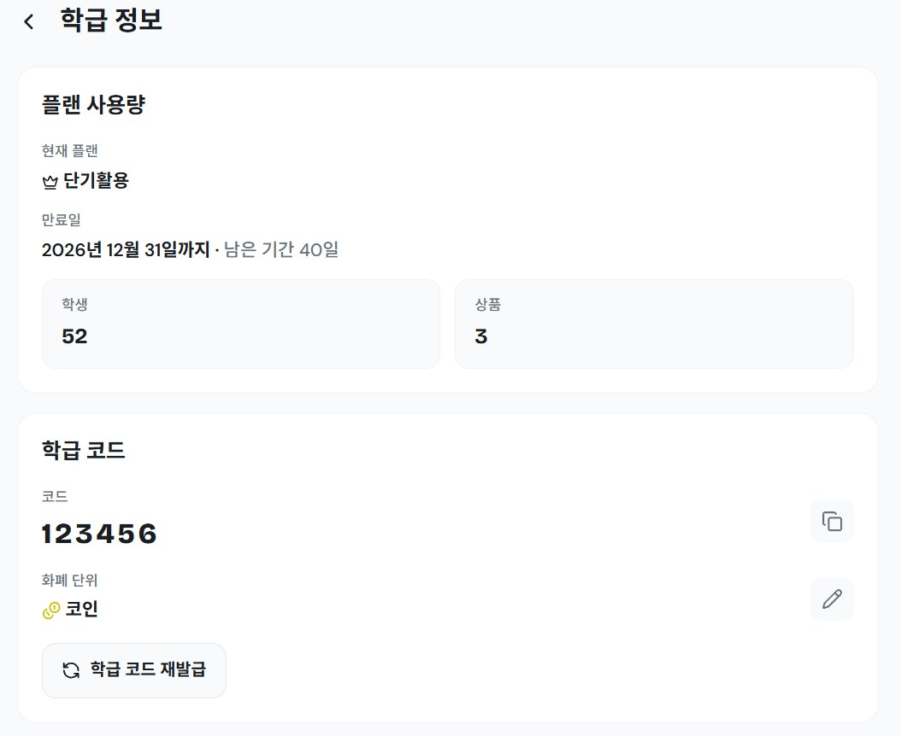
- 플랜 사용량
- 현재 플랜, 만료일, 학생 수와 상품 수를 봅니다.
- 학급 코드
- 학생이 입장할 때 쓰는 여섯 자리 숫자입니다. 옆의 단추로 복사합니다.
- 화폐 단위
- 연필 단추를 눌러 이름과 아이콘을 바꿉니다.
- 학급 코드 재발급
- 코드를 새로 만듭니다. 이전 코드로는 더 들어올 수 없습니다.
- 학생 상품 판매
- 끄면 학생 화면에서 상품 등록 단추가 사라집니다. 이미 올라온 상품은 남습니다.
- 학급명
- 학급 이름을 바꿉니다.
고급 기능 켜기
마이페이지 › 고급 기능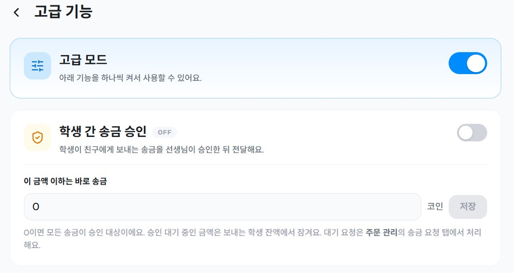
고급 모드를 켜면 아래 네 가지를 하나씩 켜고 끌 수 있습니다.
🛡️학생 간 송금 승인
학생끼리 보내는 돈을 선생님이 승인
🏛️세금
거래할 때마다 세금을 떼어 금고로
🏅뱃지 설정
뱃지 획득 기준 변경
📥거래 내역 내보내기
거래 내역을 CSV 파일로
학생 입장
학생은 닉네임과 학급 코드만으로 들어옵니다. 이름이나 연락처는 입력하지 않습니다.
📷QR로 입장
- QR 결제 메뉴의 내 QR을 화면에 띄웁니다.
- 학생이 기기 카메라로 QR을 스캔합니다.
- 학급 코드가 채워진 채로 입장 화면이 열립니다.
- 닉네임을 정하고 들어옵니다.
🔢코드로 입장
- 학생이 neobank.rewond.com에 접속합니다.
- 여섯 자리 학급 코드를 입력합니다.
- 닉네임을 정하고 들어옵니다.
입장한 학생은 홈 화면의 학생 목록에 바로 나타납니다. 목록 위 숫자가 현재 학생 수입니다.
입장한 뒤 생기는 일
| 상황 | 해결 |
|---|---|
| 닉네임이 부적절하다 | 홈에서 학생 이름을 눌러 닉네임 변경 |
| PIN을 잊어 다시 못 들어온다 | 홈에서 학생 이름을 눌러 PIN 재발급 |
| 같은 학생이 두 번 들어왔다 | 홈에서 남는 닉네임을 눌러 학생 삭제 |
| 모르는 사람이 들어온다 | 학급 정보에서 학급 코드 재발급 |
홈 화면
학급 경제 전체가 한 화면에 보입니다.
- 학급 금고
- 선생님이 가진 코인입니다. 학생에게 지급하면 줄고, 세금이 걷히면 늘어납니다.
- 현재 통화량
- 학급 안에 있는 코인 전체입니다.
- 학생 보유
- 학생들이 가진 코인의 합입니다.
단추
| 위치 | 단추 | 하는 일 |
|---|---|---|
| 파란 상자 | 발행 | 학급 금고 화면으로 가서 코인을 새로 만듭니다. |
| 지급 | 여러 학생에게 한 번에 지급합니다. | |
| 주문 | 마켓 주문을 처리합니다. | |
| 학생 목록 | 학생 이름 | 그 학생의 관리 창을 엽니다. |
| 지급 | 그 학생 한 명에게 바로 지급합니다. | |
| 최근 거래 | 더보기 | 전체 거래 내역을 엽니다. |
코인 발행과 소각
학급 금고는 교실의 중앙은행입니다. 코인을 만들고 없애는 일은 여기서만 합니다.
홈 › 발행 또는 마이페이지 › 학급 금고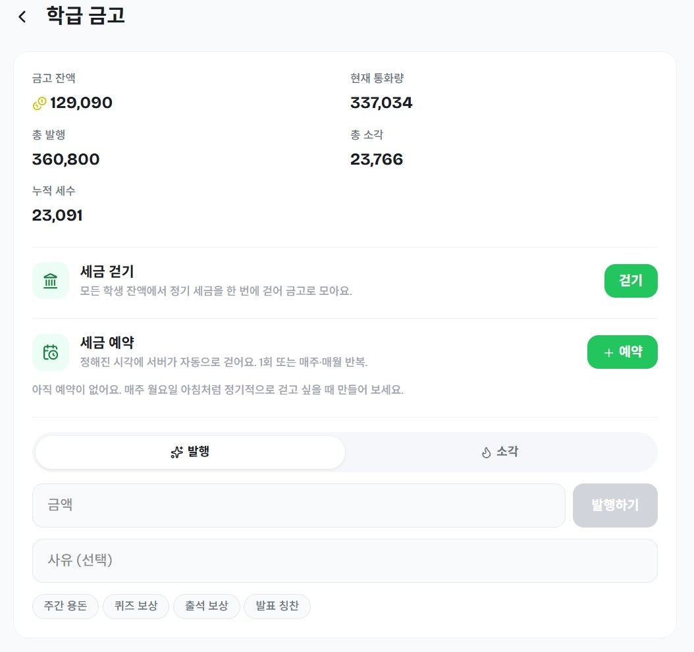
발행
- 발행 탭을 고릅니다.
- 금액을 입력합니다.
- 사유를 적거나 아래 단추에서 고릅니다.
- 발행하기를 누르면 금고 잔액이 늘어납니다.
소각
소각 탭에서 금액을 입력하면 금고의 코인이 사라집니다. 코인이 너무 많이 풀렸을 때 씁니다.
금고의 숫자 읽기
| 항목 | 뜻 |
|---|---|
| 금고 잔액 | 지금 금고에 있는 코인 |
| 현재 통화량 | 금고와 학생이 가진 코인의 합 |
| 총 발행 | 지금까지 만든 코인 |
| 총 소각 | 지금까지 없앤 코인 |
| 누적 세수 | 지금까지 걷은 세금 |
마켓의 물건은 그대로인데 코인만 계속 발행하면 학생들이 부르는 값이 올라갑니다. 교실에서 인플레이션을 그대로 볼 수 있습니다.
코인 지급
금고의 코인을 학생에게 나누어 줍니다. 학생에게는 이것이 소득입니다.
여러 명에게 한 번에
홈 › 지급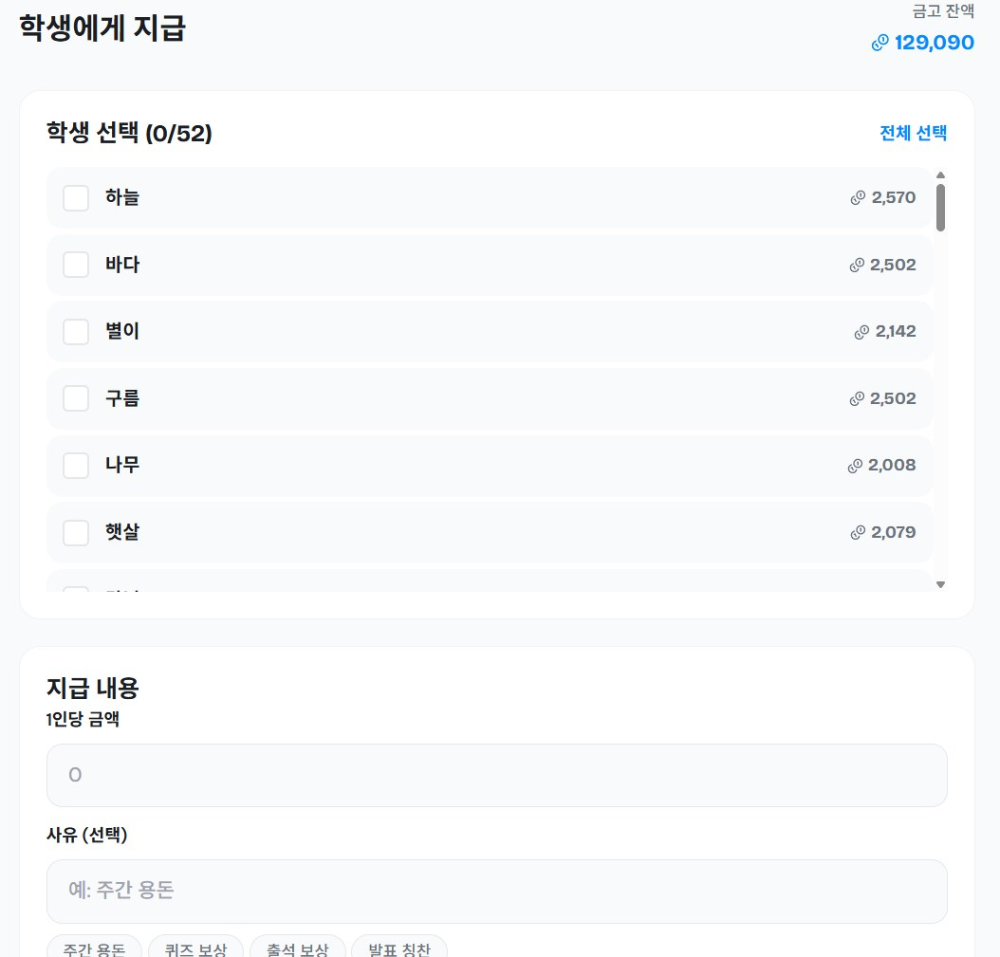
- 받을 학생을 고릅니다. 모두 줄 때는 전체 선택을 누릅니다.
- 1인당 금액을 입력합니다.
- 사유를 적거나 고릅니다. 주간 용돈, 퀴즈 보상, 출석 보상, 발표 칭찬이 준비되어 있습니다.
- 지급하기를 누릅니다.
사유는 거래 내역에 그대로 남습니다. 퀴즈 보상으로 지급한 횟수는 퀴즈왕 뱃지에 반영됩니다.
한 명씩 관리
홈 › 학생 이름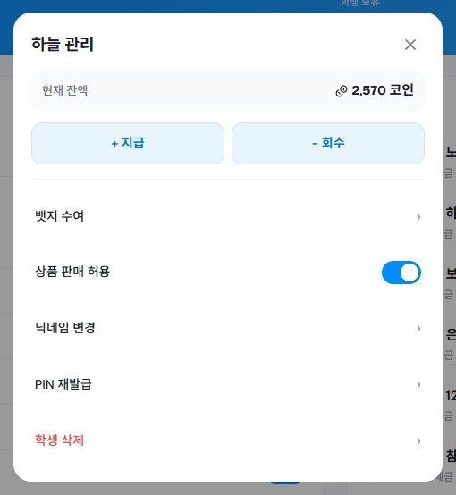
| 항목 | 하는 일 |
|---|---|
| + 지급 | 이 학생에게 코인을 줍니다. |
| − 회수 | 이 학생의 코인을 금고로 되돌립니다. 벌금이나 잘못 준 돈을 바로잡을 때 씁니다. |
| 뱃지 수여 | 기준과 상관없이 뱃지를 직접 줍니다. |
| 상품 판매 허용 | 이 학생만 마켓 판매를 막거나 풉니다. |
| 닉네임 변경 | 닉네임을 고칩니다. |
| PIN 재발급 | 학생이 PIN을 잊었을 때 새로 만듭니다. |
| 학생 삭제 | 학급에서 내보냅니다. |
클래스 마켓
코인을 쓰는 곳입니다. 선생님도 학생도 상품을 올리고 팔 수 있습니다.
마켓 › 상품 등록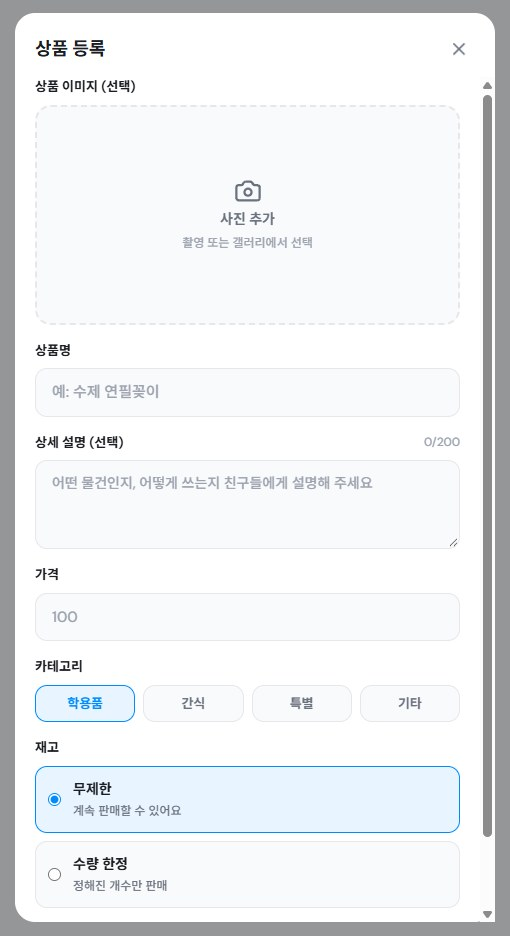
| 항목 | 내용 |
|---|---|
| 상품 이미지 | 사진을 찍거나 고릅니다. 없어도 됩니다. |
| 상품명 | 마켓 목록에 보이는 이름 |
| 상세 설명 | 200자까지. 없어도 됩니다. |
| 가격 | 코인 단위 |
| 카테고리 | 학용품, 간식, 특별, 기타 |
| 재고 | 무제한 또는 수량 한정 |
자리 선택권, 청소 면제권처럼 물건이 아닌 권리도 상품이 됩니다. 이런 상품은 특별로, 재고는 수량 한정으로 두면 희소성이 생깁니다.
마켓 목록의 상품마다 수정과 삭제 단추가 있습니다. 학생이 올린 상품도 선생님이 고치거나 지울 수 있습니다.
학생이 파는 상품
- 학급 정보의 학생 상품 판매가 켜져 있으면 학생도 같은 방식으로 상품을 올립니다.
- 특정 학생만 막으려면 홈에서 그 학생 이름을 눌러 상품 판매 허용을 끕니다.
- 같은 상품을 여러 학생이 팔면 가격 경쟁이 생깁니다. 값을 내리는 학생, 덤을 붙이는 학생이 나옵니다.
주문 관리
홈 › 주문 또는 마이페이지 › 주문 관리⏳대기 중
학생이 구매해서 처리를 기다리는 주문
✅완료
상품을 건네고 끝낸 주문
↩️반려
줄 수 없어 돌려보낸 주문
송금과 QR 결제
학생끼리 코인을 주고받습니다. 물건값을 치르거나 빌린 것을 갚을 때 씁니다.
🔎검색으로 보내기
친구 닉네임을 찾아 금액을 입력하고 보냅니다.
📷QR로 보내기
받는 사람이 자기 QR을 보여 주고, 보내는 사람이 스캔합니다.
송금 승인
마이페이지 › 고급 기능 › 학생 간 송금 승인- 켜면 학생이 보낸 돈이 선생님 승인을 거친 뒤 전달됩니다.
- 이 금액 이하는 바로 송금에 기준을 넣습니다. 50을 넣으면 50코인 이하는 승인 없이 갑니다. 0이면 모든 송금이 승인 대상입니다.
- 승인을 기다리는 동안 그 금액은 보내는 학생 잔액에서 잠깁니다.
- 기다리는 요청은 주문 관리의 송금 요청 탭에서 처리합니다.
세금
세금을 걷는 방법은 두 가지입니다. 거래할 때마다 떼는 방법과, 가진 잔액에서 한 번에 걷는 방법입니다.
거래할 때마다 자동으로
마이페이지 › 고급 기능 › 세금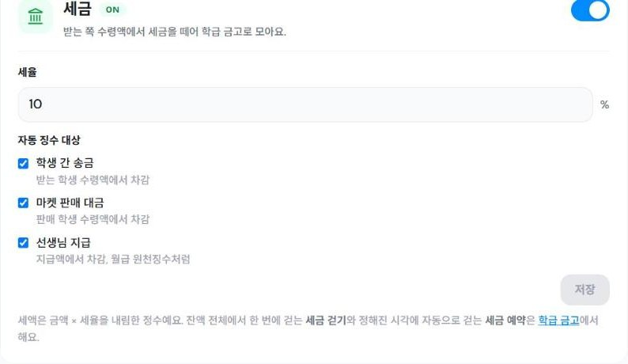
- 세금을 켭니다.
- 세율을 %로 입력합니다.
- 세금을 뗄 거래를 고릅니다.
- 저장을 누릅니다.
| 징수 대상 | 누가 내는가 | 닮은 세금 |
|---|---|---|
| 학생 간 송금 | 받는 학생 | 증여세 |
| 마켓 판매 대금 | 판 학생 | 사업소득세 |
| 선생님 지급 | 받는 학생 | 근로소득세 원천징수 |
세율 10%일 때 100코인을 받으면
세액은 금액에 세율을 곱한 뒤 소수점 아래를 버립니다. 55코인이면 세금은 5코인입니다.
잔액에서 한 번에
마이페이지 › 학급 금고- 세금 걷기
- 걷기를 누르면 모든 학생의 잔액에서 세율만큼을 한 번에 걷어 금고로 모읍니다. 많이 가진 학생이 많이 냅니다.
- 세금 예약
- 예약으로 걷을 시각을 정합니다. 한 번만 걷거나 매주, 매월 되풀이할 수 있습니다.
- 누적 세수
- 지금까지 걷은 세금의 합입니다. 이 돈을 어디에 쓸지 학급 회의로 정하면 재정 수업이 됩니다.
뱃지
경제 활동을 꾸준히 한 학생에게 주는 표시입니다.
마이페이지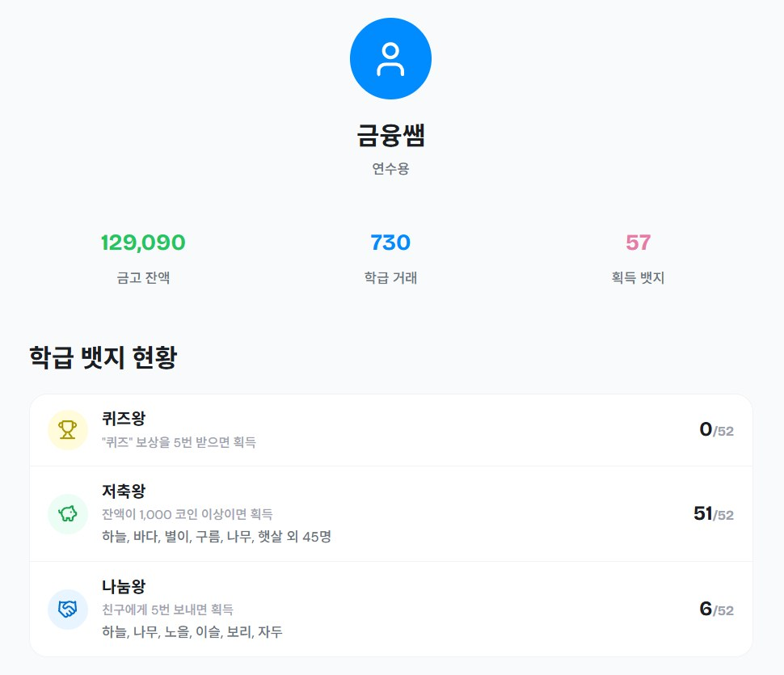
| 뱃지 | 기본 기준 | 배우는 것 |
|---|---|---|
| 퀴즈왕 | "퀴즈" 보상을 5번 받는다 | 노력해서 얻는 소득 |
| 저축왕 | 잔액이 1,000코인 이상이다 | 쓰지 않고 모으기 |
| 나눔왕 | 친구에게 5번 보낸다 | 나눔과 거래 |
마이페이지에서 뱃지마다 받은 학생 수와 닉네임을 봅니다.
기준 바꾸기
마이페이지 › 고급 기능 › 뱃지 설정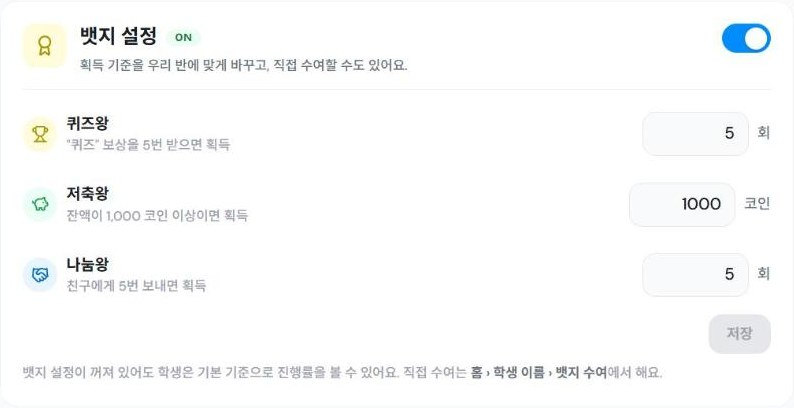
횟수와 코인 기준을 고치고 저장을 누릅니다. 지급하는 코인 규모에 맞춰 저축왕 기준을 조정합니다.
뱃지 설정을 꺼 두어도 학생은 기본 기준으로 자기 진행 정도를 볼 수 있습니다.
직접 주기
홈에서 학생 이름을 누르고 뱃지 수여를 고릅니다.
거래 내역
학급에서 일어난 모든 거래가 시간순으로 남습니다. 학급 전체의 가계부입니다.
홈 › 최근 거래 › 더보기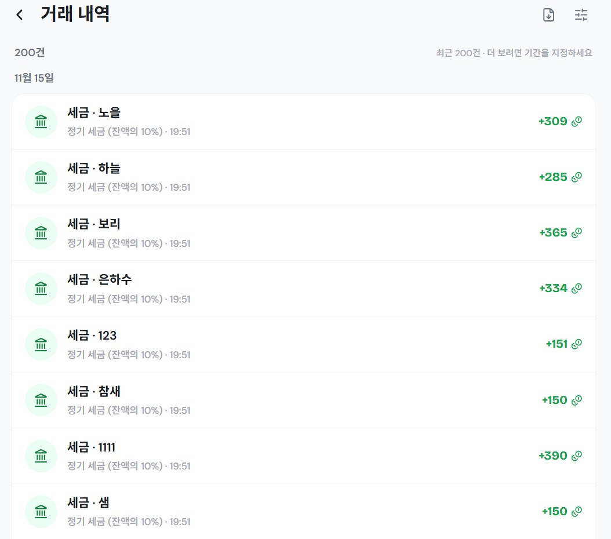
- 거래마다 종류, 상대, 사유, 시각, 금액이 보입니다.
- 처음에는 최근 200건이 나옵니다. 더 보려면 기간을 지정합니다.
- 오른쪽 위 필터로 조건을 걸어 골라 봅니다.
- 그 옆 단추로 필터한 결과를 CSV 파일로 내려받습니다. 엑셀에서 바로 열립니다.
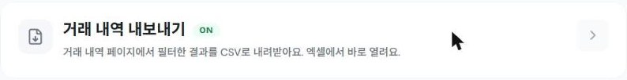
수업 순서
한 차시 안에서 네오뱅크를 쓰는 순서입니다.
| 단계 | 선생님 | 학생 |
|---|---|---|
| 준비 | 학급 코드 확인, 고급 기능에서 세금과 송금 승인 설정, 금고에 코인 발행 | |
| 입장 | 내 QR을 화면에 띄움, 학생 목록에서 인원 확인 | QR 스캔, 닉네임 정하기 |
| 소득 | 전체 선택으로 첫 용돈 지급, 활동마다 보상 지급 | 잔액 확인, 세금이 빠진 금액 확인 |
| 시장 | 선생님 상품 등록, 주문 처리 | 상품 등록, 구매, 친구에게 송금 |
| 세금 | 세금 걷기, 금고와 누적 세수 보여 주기 | 줄어든 잔액 확인 |
| 정리 | 통화량과 거래 내역으로 돌아보기 | 뱃지와 내 거래 확인 |
수업을 마친 뒤
- 같은 학급을 이어서 쓰면 잔액과 거래 내역이 그대로 남습니다.
- 외부에 알려진 학급 코드는 재발급합니다.
- 설정의 학급 해체와 회원 탈퇴는 되돌릴 수 없습니다.
요금제
학생 수와 쓰는 방식에 따라 고릅니다.
| 플랜 | 요금 | 범위 | 기능 |
|---|---|---|---|
| 스타터 | 무료 | 학생 10명까지 | 제한된 코인 송금, 마켓 상품 5개, QR 결제 |
| 개인 | 월 9,900원 | 학생 20명까지 | 무제한 코인 송금, 마켓 상품 무제한, QR 결제와 스캔, 거래 내역 리포트, 뱃지 |
| 기관·단체 | 연 1,000,000원 (1클래스 기준) | 학급 수 무제한 | 개인 플랜의 모든 기능, 관리자 대시보드, 학교 전체 통계, 우선 고객 지원 |
| 단기활용 | 하루 15,000원 (1인 기준) | 학급 수 무제한 | 개인 플랜의 모든 기능, 관리자 대시보드, 우선 고객 지원 |
캠프와 특별 수업은 단기활용 플랜으로 운영합니다. 현재 플랜과 만료일은 마이페이지 › 학급 정보에서 봅니다. 파트너 코드나 바우처는 설정의 플랜 항목에 입력합니다.